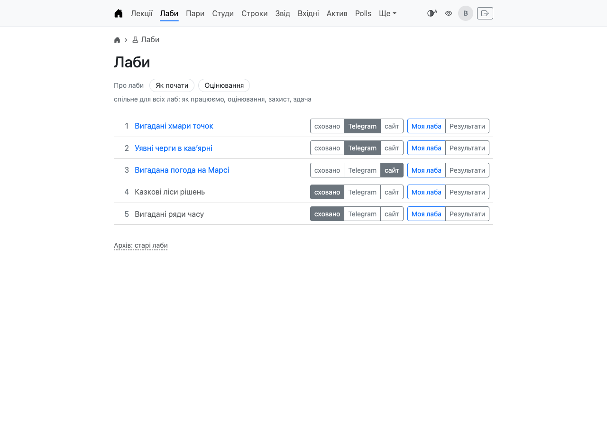
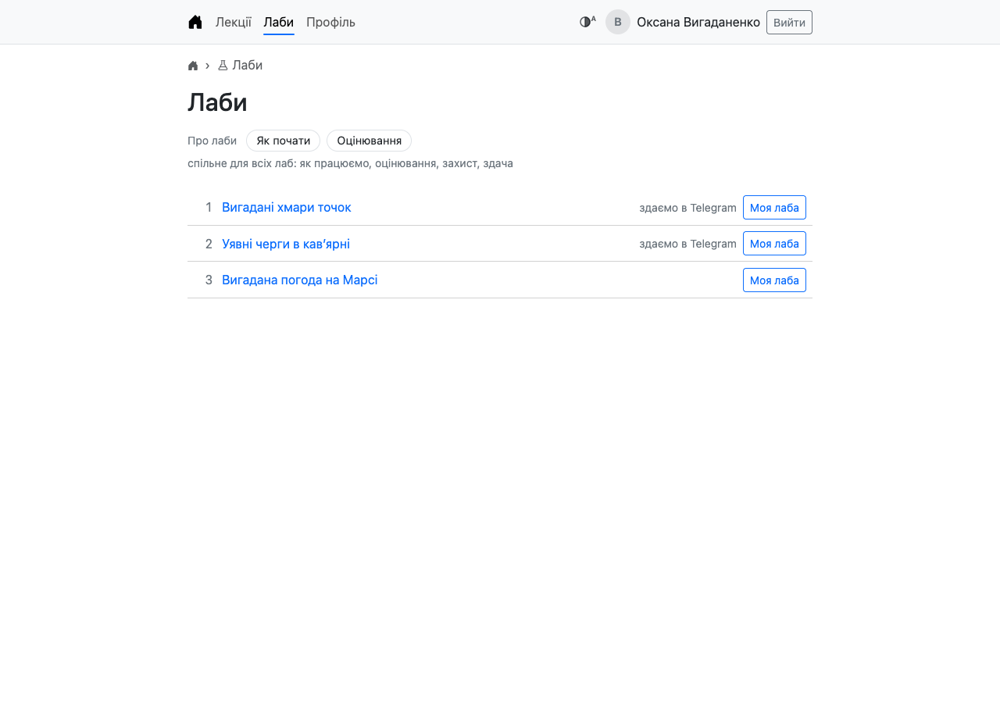
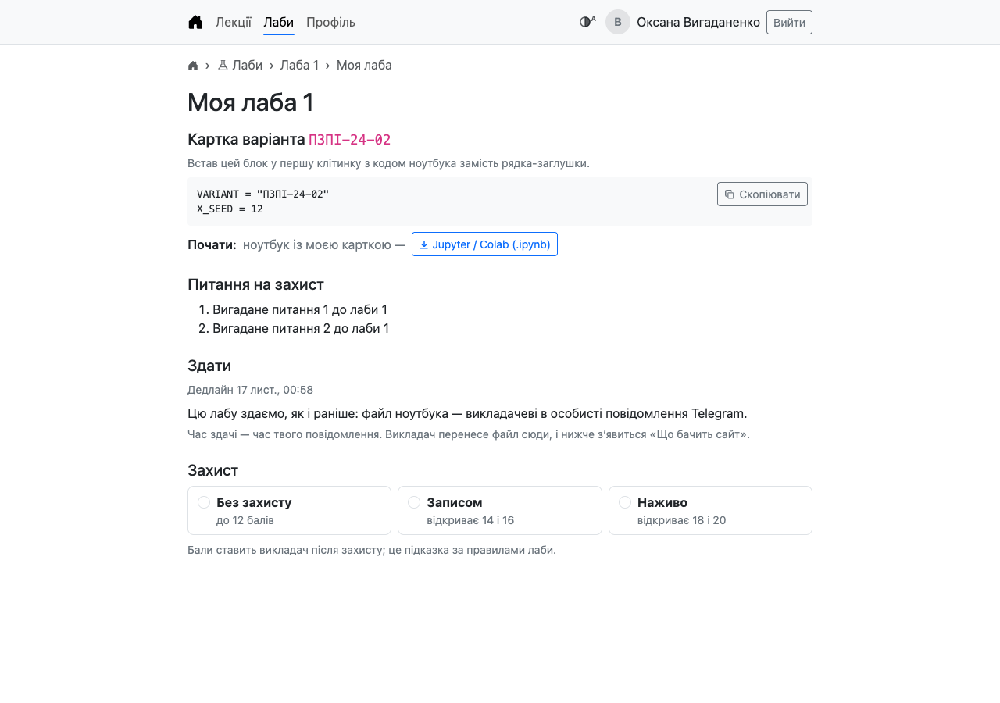
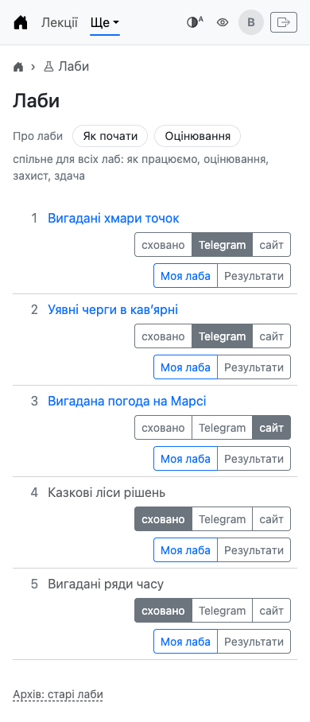
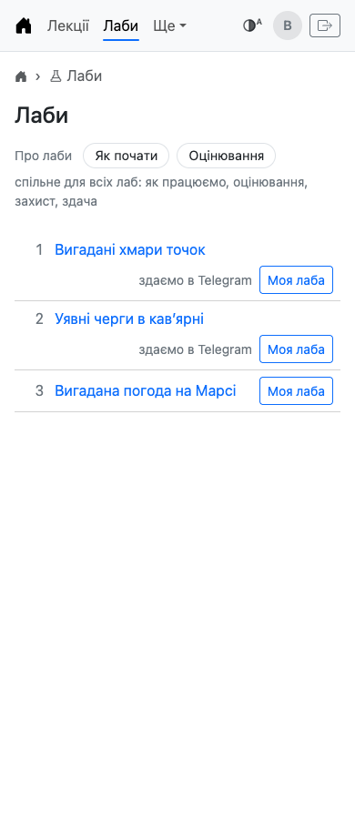
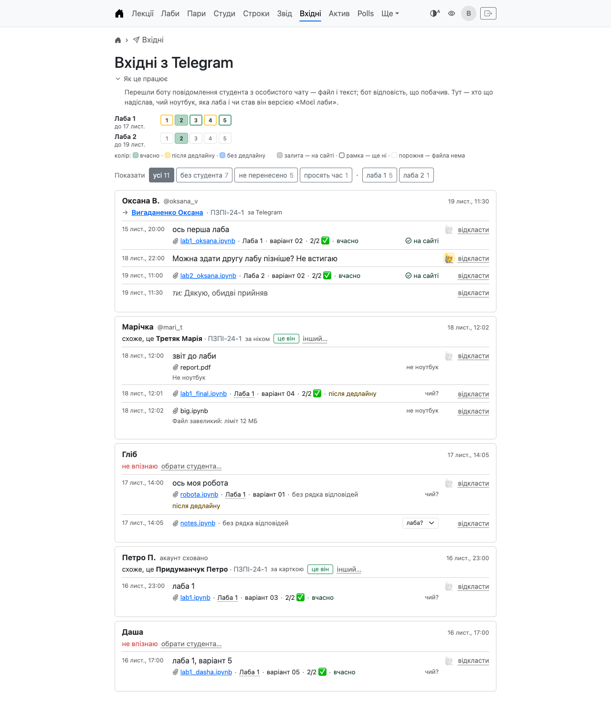
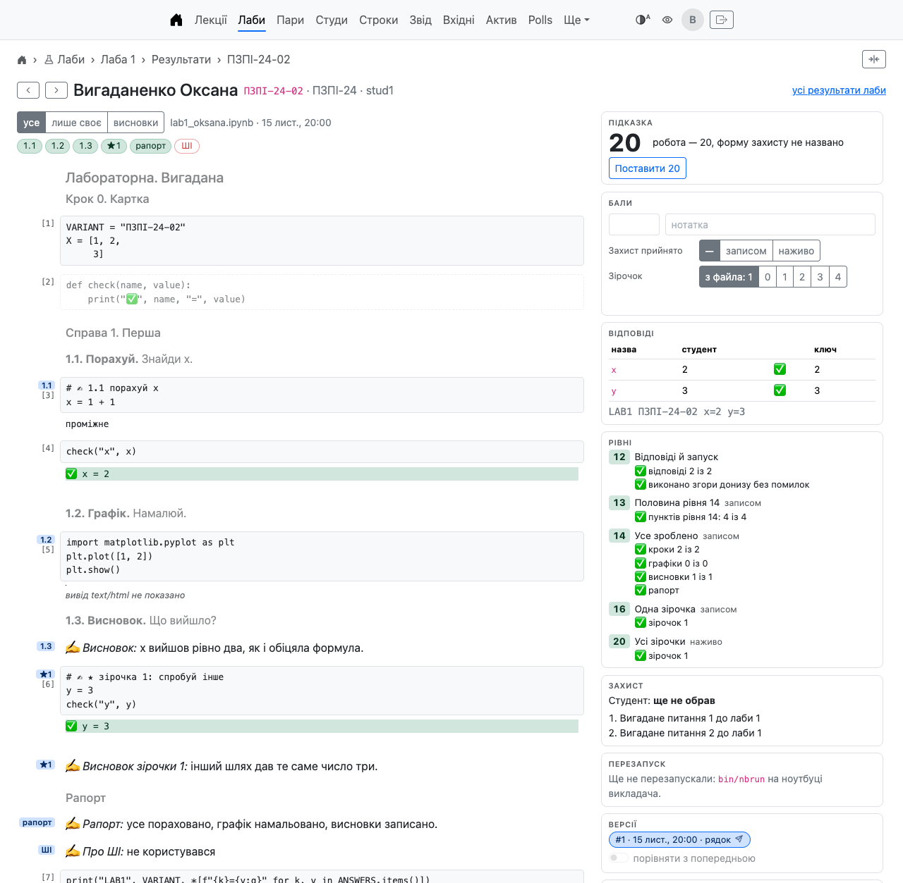
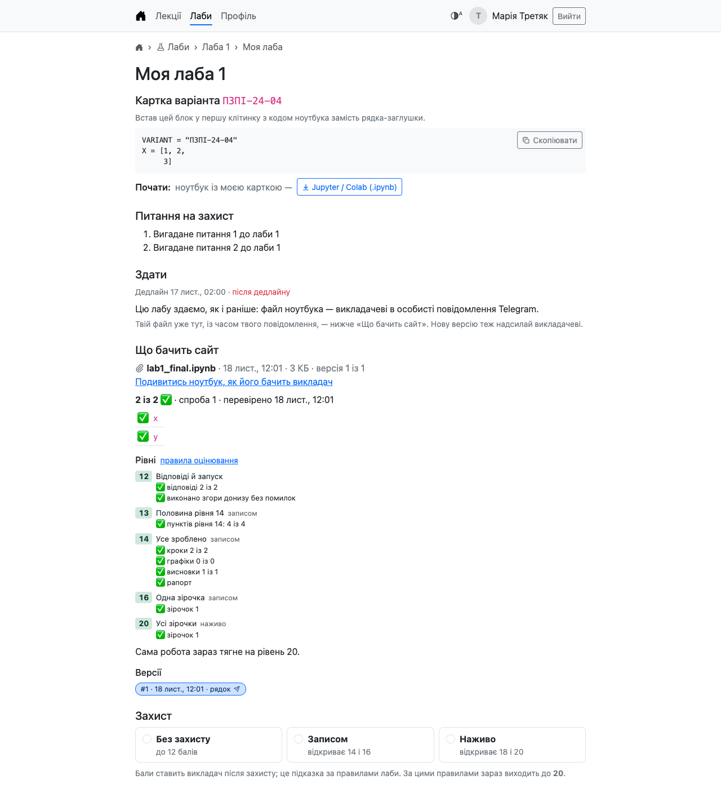
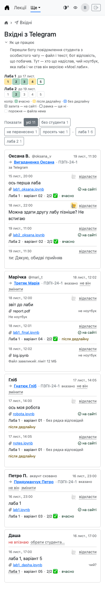

«Лаби» у викладача: перемикач у кожному рядку
стенд, вигадані дані- Що видно
- Три слова на одному місці, залите — чинне. Сховані лаби сірі. Клік нічого не зсуває.

python-labs · T368 · звіти лаб ods: минулі, поточні, майбутні
гілка ods · 20.11.2026, ніч · гейти лаб їдуть першим деплоєм (9c0a119), перенос із Telegram — наступним (7cea16c)
Твій план правильний: цієї ночі лише деплой і реєстрація. Лаби 1–2 студенти вдруге не здають: ти пересилаєш їхні повідомлення боту, і сайт сам робить із файлів версії з часом повідомлення.
На кожну лабу — один шлях. Поки лаба в стані «Telegram», сайт не приймає по ній ні файла, ні рядка відповідей: дублів і збитих дат не буде.
/due або картка студента| Лаба | Стан | Що бачить студент |
|---|---|---|
| 1 · 2 | Telegram | текст і картка є; замість здачі — «надсилай викладачеві в Telegram» |
| 3 | сайт | здача файлом на «Моїй лабі» |
| 4 · 5 | сховано | нічого: ні рядка, ні тексту, ні картинок, ні пігулок на лекціях |
Звідки стан: рядок LAB_GATES у site.env їде з кодом, тож після деплою нічого виставляти не треба. Твій клік на сторінці «Лаби» перекриває його й лягає в історію змін.





Пересилаєш боту повідомлення з особистого чату зі студентом: файли, слова, свої відповіді. Бот ставить ✍ на кожне й через три секунди тиші відповідає одним зведенням.
| Що бот дізнається | Звідки | Коли не вийде |
|---|---|---|
| хто написав | акаунт автора: id, імʼя, нік | студент сховав акаунт за пересиланням: лишається тільки імʼя. Тоді автора каже картка у файлі, ти підтверджуєш кліком «це він» |
| коли | час оригіналу, а не пересилання | — |
| файл | документ із повідомлення; посилання Colab чи Drive в тексті | понад 12 МБ; не ноутбук — рядок «не ноутбук» |
| яка лаба | рядок відповідей → шаблон лаби → назва файла | порожній чи чужий ноутбук: лабу вкажеш кліком |
| скільки ✅ | рядок відповідей проти ключа картки | рядка нема — «без рядка відповідей» |
📥 Записав повідомлень: 11 🎓 Вигаданенко Оксана · ПЗПІ-24-1 📓 Лаба 1 · ПЗПІ-24-02 · 2/2 ✅ · 15.11 20:00 · на сайті 📓 Лаба 2 · ПЗПІ-24-02 · 2/2 ✅ · 19.11 11:00 · на сайті 💬 повідомлень: 4 · 🙋 просить час ❓ Даша · не впізнаю 📓 Лаба 1 · ПЗПІ-24-05 · 2/2 ✅ · 16.11 17:00 💬 повідомлень: 1 ❓ Петро П. · не впізнаю · схоже, Придуманчук Петро (за карткою) 📓 Лаба 1 · ПЗПІ-24-03 · 2/2 ✅ · 16.11 23:00 💬 повідомлень: 1 ❓ Гліб · не впізнаю 📓 Лаба 1 · ПЗПІ-24-01 · без рядка · 17.11 14:00 📓 Лаба ? · без рядка · 17.11 14:05 💬 повідомлень: 2 ❓ Марічка · @mari_t · не впізнаю · схоже, Третяк Марія (за ніком) 📎 report.pdf · Не ноутбук 📓 Лаба 1 · ПЗПІ-24-04 · 2/2 ✅ · 18.11 12:01 📎 big.ipynb · Файл завеликий: ліміт 12 МБ 💬 повідомлень: 3 ♻️ вже були: 1 🌐 Вхідні

знімок обрізано по висоті — клік відкриває повний

знімок обрізано по висоті — клік відкриває повний


Досить деплою, списку потоку й трьох дат на «Строках». Решту принесе пересилання.
Вона в стані «сайт»: «Моя лаба» → назвати номер → перетягнути файл.
Стан «Telegram». Після переносу відкриваєш одним кліком — виправлення студенти вантажать самі.
Пряма адреса дає «такої сторінки нема». Відкрити — клік на «Лабах».
Кожне завантаження — версія байт у байт із часом; на столі перевірки є порівняння з попередньою.
Його особистий чат: переслав — і все. Окремий чат нічого не додає.
Файл із Telegram стає першою версією. Захоче змінити — завантажить другу сам.
Вручну ніхто не завантажує. Той самий файл удруге сайт упізнає й версії не множить.
«Вхідні» показують «вчасно / після дедлайну» за часом повідомлення й позначають 🙋. Рішення — твоє.
Без списку потоку студент після входу не відкриє профіль і не привʼяже бота, доки ти не пустиш його руками.
→ «Студи» → імпорт списку з поштами; група ПЗПІ-24 або ПЗПІ-24-N.
У ноутбуці є картка. Після пересилання більшості студентів номер обирати не доведеться.
Сайт візьме ноутбук за посиланням, але це його стан на зараз, а не на час повідомлення.
Усі стануть версіями в порядку надсилання. Яку рахувати «вчасно» — правило ще не названо.
До твого акаунта через Chat Automation підключено бота python-сайту. Пересилати треба боту ods.
Карає тих, кого не було на парі. Раджу до неділі 22.11.
📢 Сайт курсу запрацював: https://ods.labs.in.ua Що зробити — 5 хвилин: 1️⃣ Увійти з поштою @nure.ua 2️⃣ У профілі привʼязати Telegram-бота 3️⃣ Лаби → Лаба 3 → «Моя лаба» → назвати свій номер у списку потоку 🎁 Хто зробить усі три кроки до неділі 22.11, 23:59 — +1 бонусний бал 📌 Лаби 1 і 2 — як і раніше: файл ноутбука мені в особисті. Вдруге на сайт нічого завантажувати не треба: я сам перенесу ваші файли, з часом вашого повідомлення ⏰ Дедлайн лаби 2 — субота 21.11, 23:59 🧪 Лаба 3 — уже на сайті, і здаємо її теж там: «Моя лаба» → перетягнути файл ноутбука. Дедлайн — пʼятниця 04.12, 23:59
У гілці має бути 9c0a119: гейти вже там. Сторінка з кроками.
Без цього бот не знає, що ти викладач, і пересланого не візьме.
Група ПЗПІ-24 або ПЗПІ-24-N: за нею сайт знаходить картки.
Без них «Вхідні» не скажуть «вчасно / після дедлайну».
Telegram · Telegram · сайт · сховано · сховано; лаб 4–5 у студента нема.
Текст вище.
«Моя лаба» → номер → ноутбук зі своєю карткою → перетягнути файл.
Той самий git push, перезапуск API й бота ods.
Спершу одну розмову: глянь зведення. Далі пачками.
Хто здав, хто ні, хто пізно; 🙋 — хто просив час.
Відповіддю на переслане: /due 2 25.11 причина, або на картці студента.
Якщо вирішиш, що виправлення студенти вантажать самі (T371 Q3).
Перемикач і кнопки вилазили за край екрана, сторінка горталась убік.
→ дії лягають під назву лаби, праворуч.
Сторінка схованої лаби все одно запитувала текст і лишала червоний 404.
→ спершу дивиться на стан лаби й нічого не просить.
Рядок із лабами приходив пізніше за текст і зсував його на 30 px.
→ приходить разом із текстом.
Для ноутбука без картки посилання відкривало таблицю лаби замість роботи студента.
→ рядок памʼятає картку, на яку лягла версія.
Студент не бачив «після дедлайну» біля файла, перенесеного з Telegram.
→ бачить, щойно файл на сайті.
На довгих номерах карток назва файла стискалась до «lab1…», а факти переносились.
→ «варіант 04», повний номер — у підказці.
Якщо ти сам назвеш йому лабу, він стане версією студента, навіть коли це просто нотатки. Попередження нема.
→ такі рядки краще «відкласти».
Розмову, яку сайт привʼязав за акаунтом Telegram, руками відвʼязати не можна: він привʼяже її знову.
→ кнопки для цього випадку нема навмисно.
| Що | Результат |
|---|---|
| Смоуки ods: gates · labs · files · table · content · ods · nb · intake | 25 · 49 · 49 · 17 · 31 · 10 · 39 · 53 |
| 24 платформні смоуки з теки ods | 711 ✓ |
| python-сайт: guide · agent · view_as · notes · due · bot | усі ✓ |
| Збірка фронту ods | збирається |
| Розпізнавання лаби на справжніх шаблонах і розвʼязках пʼяти лаб, Jupyter і marimo | 25 з 25 |
| Браузер на стенді: гейти — два кола, «Вхідні» зі справжнім API — два | 22 сценарії |
ods.labs.in.uaT371. До оголошення потрібні Q1–Q2 (бонус) і Q7 (дедлайни); решта — до пересилання. Мовчання = «a».клік або Esc — закрити